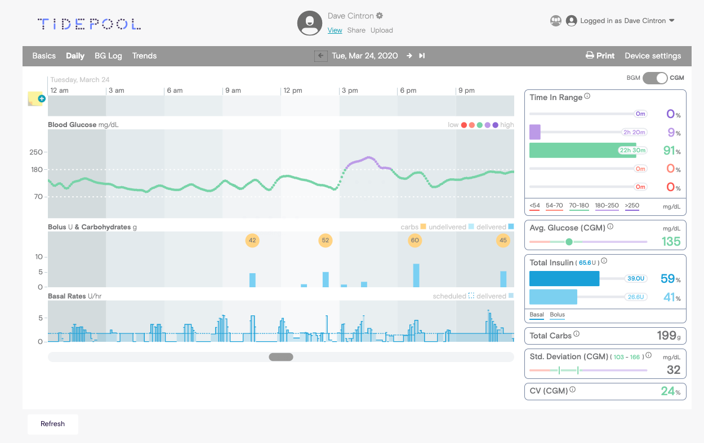
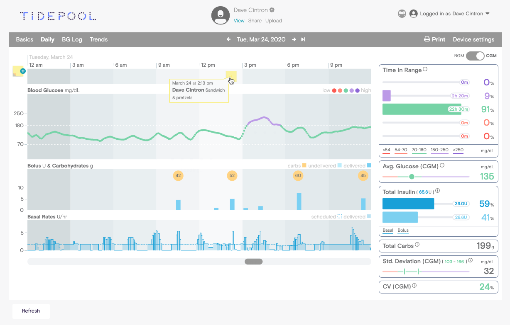
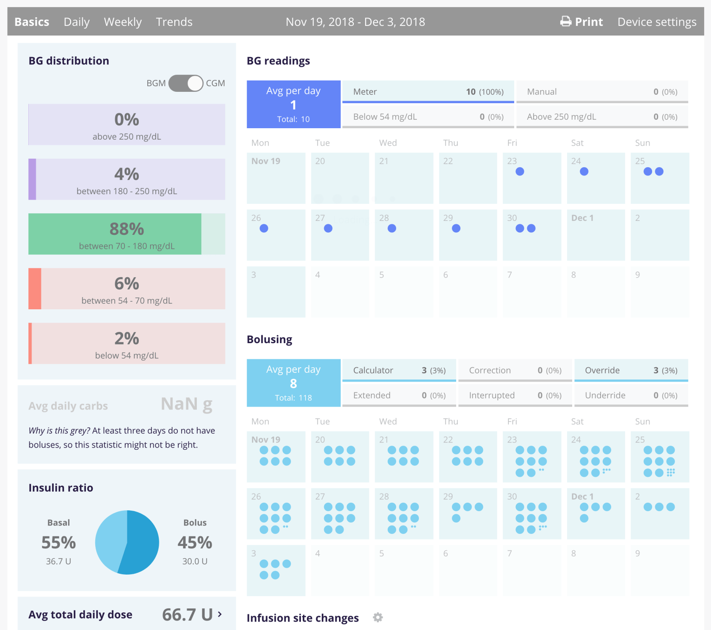
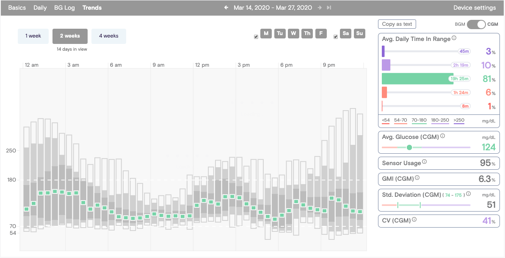
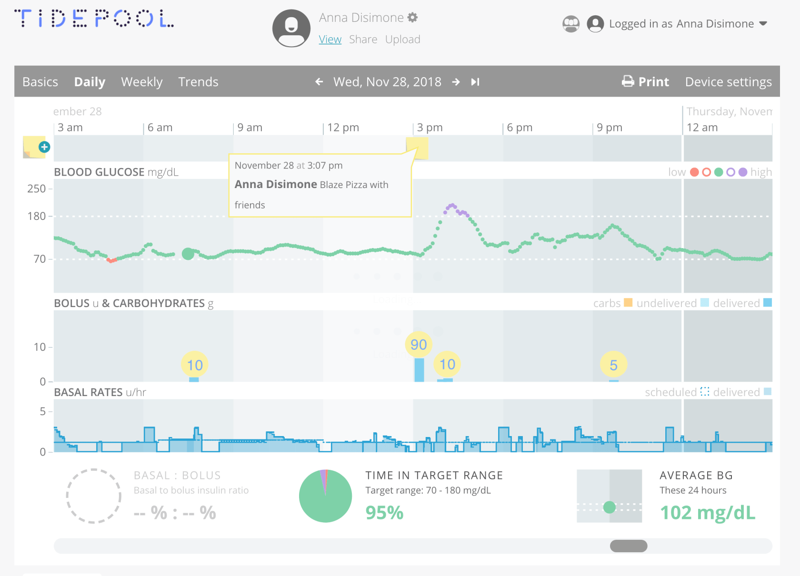

Tidepool⌁
{Disclosure: The original author of this page, Katie DiSimone, is employed by Tidepool. She used Tidepool before becoming an employee, and continues to use Tidepool and Loop. She was not prompted to say anything in particular with regards to this information; it is written based on her own evaluation of Tidepool's services.}
Tidepool's mission⌁
In Tidepool's own words, their commitment to diabetes data and accessibility is pretty clear:
Tidepool's mission is to make diabetes data more accessible, actionable and meaningful for people with diabetes, their care teams and researchers.
We believe that connected data leads to better decision-making. Tidepool’s free software liberates data from diabetes devices, and places it in context of the real world. Tidepool is designed to help you discover insights and bring context to your diabetes management. And, to help make your data more actionable, we allow you to share your data with anyone you choose: caregivers, clinicians, endocrinologists, friends, researchers – anyone.
Tidepool also recently announced that they were embarking on a project to build and support an FDA-regulated version of Loop, to be available in the iOS App Store, intended to work with commercially available insulin pumps and CGMs.
Tidepool Data⌁
Once you start uploading data into your Tidepool account, you'll see some of the benefits pretty quickly. Tidepool's data presentation is easy on the eyes. Lots of calm colors, logical data layout, quick to access important information...basically a breeze to get your needed data and get on with your analysis.

To use Tidepool's services, the process is pretty standard:
- Create a free Tidepool account to become the warehouse for your diabetes data.
- Upload device data to your account.
Children with type 1 diabetes can have their own data account, and parents can have a caregiver account. Users can also choose to share data with their encrinology clinic. You can also choose to share your diabetes data anonymously for the support of type 1 diabetes researchers, if desired.
How do you upload data into Tidepool account?⌁
There are two methods for uploading different data to your Tidepool account:
-
Tidepool Uploader (program on your computer) - Tidepool Uploader supports a large variety of current diabetes devices in the market; Animas, T-slim, Medtronic, Omnipod, Dexcom, and more. The full list of devices is here. To upload the data from these devices, you download the free Tidepool Uploader program, connect your device to the computer according to the instructions provided in the Uploader, and your data is then securely uploaded and stored in your Tidepool account. Most users will perform uploads on a semi-regular basis; weekly, monthly, or prior to each clinic visit.
-
Tidepool Mobile (app on your phone) - Tidepool Mobile is available for both Android and iOS/iPhone users. Tidepool Mobile is a companion app to Tidepool that lets you add notes about meals, exercise or anything else. See your CGM, pump, and meter data alongside any notes you add. Track your favorite meals and your regular exercise, and learn from what happens.
In summary, the Uploader is for uploading the numeric data from your various diabetes devices and the Mobile app is for adding the contextual information and notes-on-the-go to make your numeric data more useful.
Does Tidepool Uploader work for Loop users?⌁
There has been a lack of ability to get Loop data into Tidepool using the Tidepool Uploader. The only Loop-compatible pumps supported in Tidepool Uploader are the x23/x54 pumps, so users of the x15 and x22 pumps cannot upload their pump data. Furthermore, the Medtronic pump still suffers from the lack of internal storage sufficient to store more than 3-7 days worth of Looping data.
However, there has been a very exciting development! Tidepool's Mobile iOS app has been updated to upload Apple's HealthKit data into Tidepool. Since Loop uses HealthKit to store all of your insulin, carbohydrate, and CGM data, this means Tidepool can now upload the full suite of available Loop information. So, there's no need to use Tidepool Uploader for Loop users...their Tidepool Mobile app can take care of the needed connections. Read below for lots of details about this important development.
How can I share my Tidepool data?⌁
Sharing the data is simple. You can click on your account’s Share option and enter in the email addresses for those that you want to share with. Those people will need a Tidepool account. If they don’t have one currently, they will follow easy prompts for an account setup after they’ve received your share invitation. Clinics using Tidepool will have a Tidepool account email that you can add to your account, enabling the clinic to easily view your data. You can also remove access for anyone with a simple click.

Viewing your Tidepool data⌁
There are two distinct viewing options for your Tidepool data, and they are not identical. You can either view your data:
- Using a desktop computer using the Chrome browser and logging into your Tidepool account, or
- Using your Tidepool Mobile app AND associated notes.
Currently, only the Chrome desktop browser is compatible with Tidepool. You will not be able to use Safari or other browsers to view the data, nor will you be able to use Chrome application on a phone. If you want to see your data on a computer, you need to use the Chrome browser. If you want to see your data on your phone, you must use the Tidepool Mobile app and use an associated note to view the data surrounding the note's time frame. Mobile data viewing is not a live stream, but rather available as "bookmarked" time periods anchored by notes.
What Loop data will you see in desktop Chrome?⌁
You will see your Loop's temporary basals, CGM readings, boluses, notes, and various metrics about your data distribution. If you separately load your blood glucose meter or any other supported device to Tidepool, those will also overlay. See discussion below about what’s missing for Loop users and still being developed (hint…carbohydrates aren’t showing yet).



The Tidepool Mobile app is not a live-viewing app of looping data. For people coming from Nightscout, this may be a bit confusing but realize the intended purpose of the Tidepool Mobile app isn’t live-viewing. It is the place that you can (1) upload/sync HealthKit data, (2) easily add/edit/delete notes to the data set, and (3) search for notes and view Loop data surrounding that note.
In fact, you will basically see NO data in the Tidepool Mobile app unless you have Tidepool data uploaded and notes are added. Once you add a note, you are basically placing a bookmark on the data set. You will be able to click on the note and see 7 hours of old data before the note, and then the note will continue to collect 7 hours of data to display after the note. So, technically, you’ll be able to refresh the app’s view to see current data for approximately 7 hours after a note is placed.
For example, here’s a sample note+data set below from my Tidepool Mobile app. Over the last couple hours, my daughter noticed that she was staying above target (unusual for her on Loop with the meal she had) for quite a while. She had given a couple small corrections (see the two 1 unit correction boluses?) without result. She started her secondary troubleshooting…if it’s not the food, maybe it’s the infusion site? She realized it has been 4.5 days since changing her site. She changed the site, and logged a note using the Tidepool Mobile app. That note shows on my phone's Tidepool Mobile app, shows up on her Tidepool data for her endo to see too, and we can refresh the view to see how blood glucose trends for the next 7 hours after the site change.

Tidepool's Mobile app for iOS/iPhone⌁
As part of Tidepool Loop development, Tidepool updated its Tidepool Mobile iOS app to integrate with Loop user's data stored in Apple's HealthKit database. This update also supports the Jaeb Center observational study ](jaeb.org/loopstudy) of Loop.
How does the Loop data upload work?⌁
The Tidepool Mobile iOS app will sync Loop's diabetes-related HealthKit data into your Tidepool account. The app will continuously upload that data so long as the Tidepool Mobile app is open, even if it is only open in the background. That data will then be viewable in two places: on the Tidepool Mobile app itself when using notes, or in your Tidepool account using desktop Chrome browser (note: the two options are not identical viewing platforms, see discussion above). This means you will not have to plug any of your devices into a USB cable in order to upload your information to Tidepool.
Is the Tidepool Mobile app a replacement for Nightscout?⌁
Nope. This was not designed nor intended to be a replacement for your Nightscout site. They complement each other, rather than compete. This new upload of Loop data will allow you and your clinics to have a powerful tool to analyze Loop data through an easy-to-use, shared hub.
Are there any known issues with Loop and Tidepool Mobile app?⌁
Sure, of course…this is a new update to the Tidepool Mobile app and there are some issues still being worked out. For example, the carbohydrates associated with the Loop uploads are being uploaded by Tidepool Mobile, but aren’t currently rendered in your desktop view, but they are shown in the Tidepool Mobile app. If you look at the Daily view screenshot a little above…notice that the little yellow carb circles are missing? Tidepool will be getting that bug addressed. Soon, hopefully, your chart will include little carb circles like below (rendered with my crude skills for demonstration only).

There are some calculated data areas that need updating, too. If you see a NaN (“not a number”), it is a placeholder for where a number will eventually go. Tidepool knows and doesn’t like seeing those either. Tidepool keeping a list of the things that need addressing.
What cool thing can you use this Tidepool Mobile app for?⌁
You mean what OTHER cool thing can Tidepool Mobile app do besides uploading Loop data automatically? The Tidepool Mobile app also provides an easy searchable log of meal boluses. If you are still learning new meals in Loop…how much to bolus, how long of a carb absorption…these notes are searchable and super easy to add. Learning how to bolus for that Tofu Breakfast Burrito? Simply record a note of how you bolused for it. If you want to, come back afterwards and leave yourself some suggestions for the next time to try. This searchable information can also help for teens learning and exercising independent skills. If they aren’t sure of how to bolus for a meal, this could give them easy tips from past success without necessarily having to stop and ask a parent. As much as a parent might scoff at the idea of a kid looking up a meal, if the alternative is asking a parent…that might be all the motivation it takes. How about co-parenting? Want to leave a note that another parent or caregiver can look up? "How were the last Chicken McNuggets bolused?" or "When was the last site change?" can easily be tracked and retrieved with notes.
For an easy example, search for the word burrito (doesn’t have to be a hashtag) and any notes with the word “burrito” will be available for review, as well as any added comments.

Hormones can also be easily tracked with notes. What day-of-the-month and how did I change the basals? Looking to find patterns in those female hormones? This could be a really slick tracking tool to easily log periods of insulin resistance and what part of the cycle they are occurring at.
Is the Tidepool Mobile app only for Loop users?⌁
The Tidepool Mobile app uploads diabetes-related HealthKit data regardless of the source. Loop users store their data in HealthKit, so this is a nice fit. Other diabetes devices (e.g., OneDrop BG meter) and apps (e.g., Spike and Dexcom) also store their data in HealthKit. Some people even manually enter their diabetes data into HealthKit. For all those uses, the Tidepool Mobile app will upload the HealthKit data. OpenAPS does not store its data in HealthKit, so this will not upload OpenAPS-related data. However, if OpenAPS users are using Spike app, some integration of information through Nightscout is possible. Currently, OpenAPS SMBs, boluses, and carbohyrdates can be uploaded to HealthKit for OpenAPS+Spike+Nightscout+iPhone users. Spike does plan to add temporary basal integration to HealthKit at some time in the future.
How can you get the Tidepool Mobile app?⌁
Tidepool Mobile is available in the iOS App Store on your Loop device.